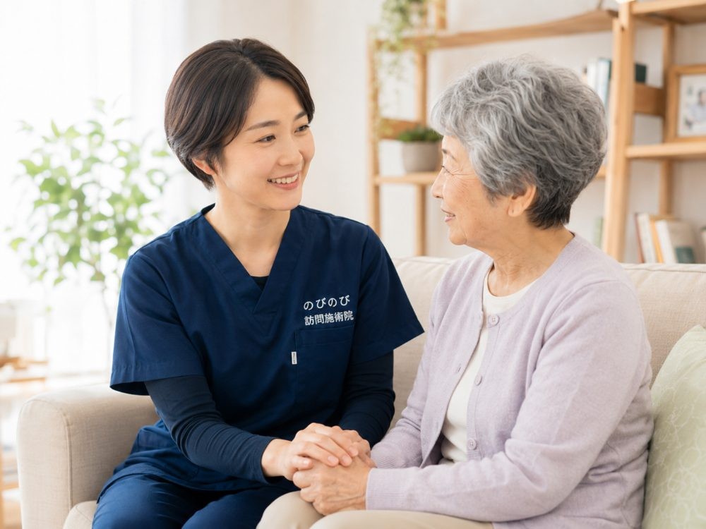

「要介護認定を受けていないと、訪問の施術は頼めない」。そう思って問い合わせをためらう方が多くおられます。けれど訪問鍼灸マッサージは、介護保険ではなく医療保険（はり・きゅう）で受ける施術です。認定のあるなしは、利用できるかどうかと直接つながるものではありません。この記事では、のびのび訪問施術院が、必要な条件と介護保険との関係を、順を追って整理します。
この記事のポイント
結論からお伝えします。訪問鍼灸マッサージは医療保険で受けるため、要介護認定の有無を問わず利用できます。そろえるのは二つ。医師が施術を必要と認めた同意書と、ご自身での通院がむずかしい状態、この二点です。費用は自己負担1割で1回およそ395円。介護保険の区分支給限度額とは別の枠なので、デイサービスなどを使いきっていても、別枠として併用できます。認定を申請中の方、非該当と判定された方も、条件を満たせば始められます。
「認定がないと頼めない」という思い込み
訪問という言葉から、介護保険のサービスを思い浮かべる方が多いようです。ヘルパーの家事援助やデイサービスの送迎は、たしかに要介護認定を前提とした仕組み。一方で、のびのびがお届けする訪問鍼灸マッサージは、健康保険（医療保険）で受ける施術です。対象になるのは健康保険に加入している方で、介護認定の枠組みとは別に考えます。
ですから、認定を受けていない方も、これから申請する方も、非該当と判定された方も、後で述べる二つの条件がそろえば利用できます。ヘルパーやデイとは制度上の入り口が違う、とだけ覚えておいていただければ十分です。
受けるために必要なのは、二つだけ
一つめは、医師の同意書です。慢性的な痛みやしびれ、麻痺にともなうこわばりなどに対して、はり・きゅうの施術が必要だと医師が認めた書類を用意します。要介護認定に関する書類は要りません。
二つめは、ご自身での通院がむずかしい状態にあること。歩行が不安定、外出に付き添いが要る、痛みで長く座っていられない。そうした事情で通うのが難しい方が対象になります。
同意書はかかりつけの先生にお願いする形ですが、依頼の書式づくりや段取りは、のびのびがお手伝いします。施術を続ける際に必要な再同意の手続きも、時期が来たらこちらから案内しますので、書類の管理を気にしすぎなくて構いません。
介護保険の「限度額」とは別の財布
介護保険には、要介護度ごとに1か月で使えるサービスの上限、区分支給限度額があります。デイや訪問介護をたくさん使うと、この枠が少しずつ埋まっていきます。
訪問鍼灸マッサージは医療保険の施術なので、この限度額とは別の会計です。介護のサービスをめいっぱい使っている方でも、その上に重ねて受けられます。介護の枠を削って施術に回す、といった調整は要りません。
なお、生活保護を受けている方は、医療扶助の範囲で施術を受けられる場合があります。この場合も介護認定は前提になりません。制度が使えるかどうかは状況によって変わるため、分かる範囲でご案内したうえで、詳しくは担当のケースワーカーにも確認いただく形をとります。
申請中・非該当のときこそ、支えになる
認定の結果が出るまでには時間がかかります。その待っている間、介護サービスはまだ使えません。けれど体の痛みやこわばりは、結果を待ってくれないものです。
訪問鍼灸マッサージは、この時期の体を支える手立ての一つになります。医師の同意さえ得られれば、認定の結果を待たずに始められます。非該当と判定された方も同じで、認定がないことを理由に断られることはありません。
費用の目安と、支払いのしくみ
1回の施術は総額3,950円。自己負担は割合に応じて、1割でおよそ395円、2割で約790円、3割で約1,185円です。週1回のペースなら、1割の方で1か月およそ1,580円が目安になります。認定のあるなしで料金が変わることはありません。
施術先までの出張費や交通費は別途かかりません。エリア内であれば、どこにお住まいでも同じ料金です。お支払いは1か月分をまとめて精算し、どんな施術をした月かが分かる明細をお渡しします。始める前に、月あたりのおおよその見通しもお伝えするので、家計の相談と一緒に考えていただけます。
介護サービスと組み合わせて使う
デイサービス、訪問介護、訪問リハビリを利用しながら、訪問鍼灸マッサージを併せて受けることもできます。制度の枠が別なので、どちらかを我慢する必要はありません。
ケアマネジャーがついている方には、施術の様子や内容を共有しながら進めます。ケアプラン全体のなかで、体のケアをどう位置づけるか。そこを一緒に考えられると、無理のない組み立てにしやすくなります。
介護保険の「訪問リハビリ」とはどう違うか
名前が似ているので混同されがちですが、訪問リハビリは介護保険のサービスで、要介護認定を前提とした機能訓練です。理学療法士などが、運動や動作の練習を行います。
のびのびの訪問鍼灸マッサージは、医療保険で受けるはり・きゅうの施術。認定は前提になりません。加えて、手技によるケアや体を動かす機能訓練も、鍼灸に組み合わせています。これらに追加の料金はかかりません。目的の立て方が異なるので、両方を併用する方もいます。
まずは、状況を聞かせてください
利用できるかどうかは、一人ひとりの事情で変わります。認定のあるなし、体の状態、いま通っている医療機関。このあたりを聞かせていただければ、使えるかどうかと、始めるまでの手順をお伝えできます。相談したからといって、必ず始めなければいけないわけではありません。
のびのび訪問施術院がうかがえるのは、大阪府と兵庫県の対応エリア。豊中市・吹田市・茨木市・高槻市・箕面市・摂津市・池田市、尼崎市・伊丹市、そして大阪市の淀川区・東淀川区・都島区・北区・旭区で施術しています。気になることがあれば、遠慮なく声をかけてください。
よくある質問
要介護認定がなくても利用できますか？
はい。訪問鍼灸マッサージは医療保険で受ける施術なので、認定のあるなしに関わらず利用できます。医師の同意書と、通院がむずかしい状態、この二つがそろえば始められます。
認定を申請中でも始められますか？
始められます。結果を待っている間も、医師の同意が得られれば施術に入れます。介護サービスがまだ使えない時期に、体を支える手立てとして選ぶ方もいます。
介護保険の限度額を使い切っていても頼めますか？
頼めます。訪問鍼灸マッサージは区分支給限度額とは別の枠なので、介護のサービスを上限まで使っていても、その上に重ねて受けられます。
非該当と判定されました。それでも受けられますか？
受けられます。非該当であることは利用の妨げになりません。医師の同意を得たうえで、通院がむずかしい状態であれば対象になります。
費用はどのくらいかかりますか？
1回の総額は3,950円で、自己負担は1割の方でおよそ395円です。週1回なら1か月1,580円ほどが目安。出張費は別途かからず、エリア内は同じ料金です。
相談だけでもかまいませんか？
かまいません。状況をうかがって、利用できるかどうかと手順をお伝えするところまでが、はじめの一歩です。話を聞いたうえで、始めるかどうかはゆっくり決めていただけます。
この記事の根拠
はり・きゅう、あん摩マッサージ指圧の療養費は、厚生労働省が定めた取扱いにもとづく制度です。制度そのものをご自身で確かめたいときは、厚生労働省の療養費について（新しいタブで開きます）をご覧ください。「被保険者のみなさまへ」の案内も、同じページからたどれます。